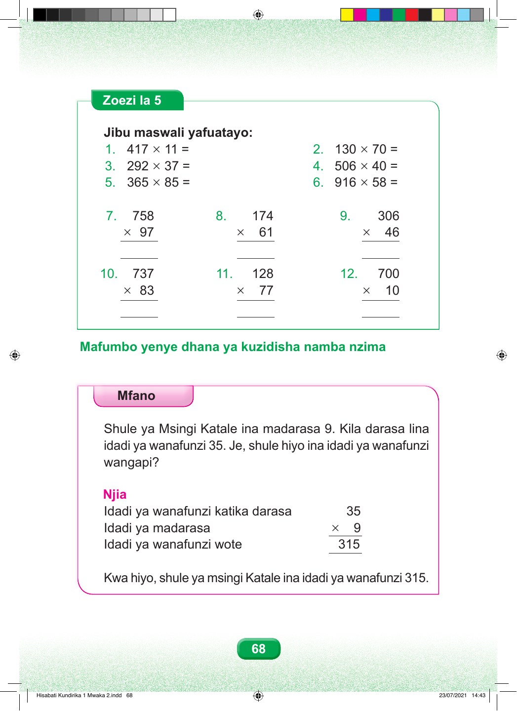

Zoezi la Tano Jibu maswali yafuatayo. Swali namba moja. Mia nne kumi na saba kuzidisha kumi na moja, sawa sawa na ngapi? Swali namba mbili. Mia moja thelathini kuzidisha sabini, sawa sawa na ngapi? Swali namba tatu. Mia mbili tisini na mbili kuzidisha thelathini na saba, sawa sawa na ngapi? Swali namba nne. Mia tano na sita kuzidisha arobaini, sawa sawa na ngapi? Swali namba tano. Mia tatu sitini na tano kuzidisha themanini na tano, sawa sawa na ngapi? Swali namba sita. Mia tisa kumi na sita kuzidisha hamsini na nane, sawa sawa na ngapi? Swali namba saba. Mpangilio wa wima: mia saba hamsini na nane kuzidisha tisini na saba, sawa sawa na ngapi? Swali namba nane. Mpangilio wa wima: mia moja sabini na nne kuzidisha sitini na moja, sawa sawa na ngapi? Swali namba tisa. Mpangilio wa wima: mia tatu na sita kuzidisha arobaini na sita, sawa sawa na ngapi? Swali namba kumi. Mpangilio wa wima: mia saba thelathini na saba kuzidisha themanini na tatu, sawa sawa na ngapi? Swali namba kumi na moja. Mpangilio wa wima: mia moja ishirini na nane kuzidisha sabini na saba, sawa sawa na ngapi? Swali namba kumi na mbili. Mpangilio wa wima: mia saba kuzidisha kumi, sawa sawa na ngapi? Mafumbo yenye dhana ya kuzidisha namba nzima. Mfano Shule ya Msingi Katale ina madarasa tisa. Kila darasa lina wanafunzi thelathini na watano. Je, shule hiyo ina wanafunzi wangapi? Njia. Idadi ya wanafunzi katika kila darasa ni thelathini na tano. Idadi ya madarasa ni tisa. Tendo ni thelathini na tano kuzidisha tisa. Mpangilio wa wima una thelathini na tano juu na tisa chini ya tarakimu tano, ikiwa na alama ya kuzidisha. Thelathini na tano kuzidisha tisa, sawa sawa na mia tatu kumi na tano. Kwa hiyo, Shule ya Msingi Katale ina wanafunzi mia tatu kumi na tano. 68 Hisabati Kundirika 1 Mwaka 2.indd 68 23/07/2021 14:43